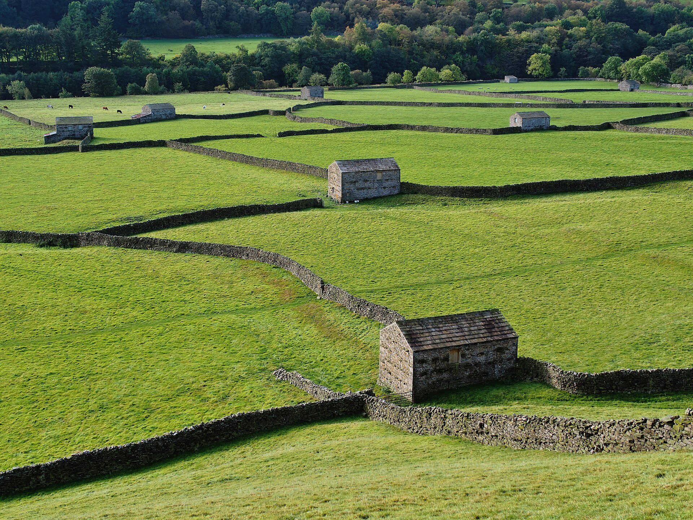

07:40
- Path
- FP 12
- Grid reference
- SD 9412 9803
- Fault
- Bottom step split
- Logged by
- Example Warden
- Status
- Open
Wardens log path faults on foot; rangers get the work list.
Free for wardens. No card needed.
One stile, as a walker’s email and as a Waymark entry.
Hi, the stile past the church has a broken step. Second field, I think?
07:40
The phone knows where you stand.
Six kinds cover most faults.
Fitted to the kind.
It sends when there’s signal.
Every open fault, with the grid reference to drive to.
FP 12 and FP 14
3 Nov 2026
| Ref | Fault | Path | Grid ref | Status |
|---|---|---|---|---|
| WM-0142 | Stile, step split | FP 12 | SD 9412 9803 | Open |
| WM-0143 | Gate latch broken | FP 12 | SD 9437 9768 | Open |
| WM-0144 | Fingerpost down | FP 14 | SD 9481 9771 | Open |
| WM-0131 | Disc missing | BW 3 | SD 9466 9842 | Fixed 1 Nov |
WM-0142 as GeoJSON
waymark-fp12.geojson
{
"type": "Feature",
"geometry": { "type": "Point", "coordinates": [-2.0889, 54.3874] },
"properties": { "ref": "WM-0142", "path": "FP 12", "kind": "stile", "status": "open" }
}Wardens never pay.
One ranger and up to 40 wardens
The work list and exports
£24a month£240a year
Start a team
Add your wardens. The list fills as they walk.